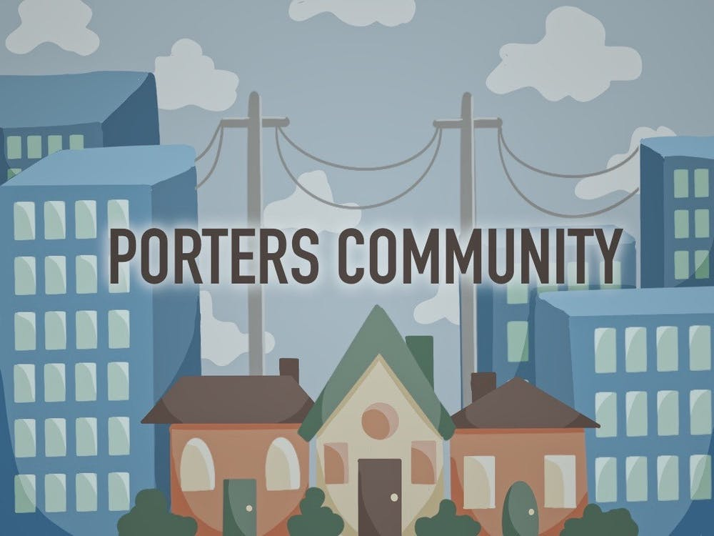

By Gregorio Ruiz-Perez
Alligator Staff Writer
When Denise Burton returned to Porters Quarters in 2011, the landmarks that once guided her were gone. Burton, who left in 1980 for Georgia with her husband, called a friend asking why she couldn’t find the Alachua General Hospital, a mile marker she used to get around.
UF demolished the hospital in 2010, a year before she returned.
The new additions to her community were just as surprising.
While growing up, there was no Sixth Street. There were no fire hydrants. The gravel roads that shook her car as she drove were replaced with paved ones.
“The roads in my neighborhood were rocks and sand, not even asphalt,” Burton said. “So when I drove up here … it was a smooth ride. I’m like, when did this happen?”
Although Burton admitted this development in Porters was a necessity and good to return to, a lot of recent changes weren’t welcomed by the community. Burton, along with other Porters residents, said it’s important that further development be responsible and consider the wants and needs of residents.
According to a 2018 UF project called Architecture Against Gentrification, Porters Quarters was founded shortly after the Reconstruction era in 1884 thanks to Dr. Watson Porters, a Canadian physician, who sold lots exclusively to African Americans. He hoped that the community would become self-sufficient.
For a time, it was.
Property developers are eager to expand into the neighborhood conveniently situated between UF, Depot Park and downtown. Gentrification has crept into Porters, stripping the neighborhood of its community businesses.
Burton, 65, spent most of her formative years in Gainesville. Her father moved their family from Louisiana to the Porters community when she was just 3 years old. At 24, after attending Santa Fe College and UF, she got married and hopped from Georgia to Germany to Indiana to Ohio.
When Burton returned a decade ago, two of her neighbors’ homes were gone. She talked to other community members about the changes and discovered developers were moving in. They had bought homes from families struggling with their property taxes or trying to get rid of the property.
She began to understand what was happening to the Porters community: gentrification.
People from Canada, New York, New Jersey and California have called her asking to buy homes in Porters, she said, but she believes the developers are approaching it in the wrong way. Some of the homes sold went for less than $260,000, she said.
“If you're going to buy the property, let's be a little bit more giving of the money because you're going to make millions off of this area,” Burton said.
Gentrification caused by a need for student housing makes sense, but it shouldn’t displace another group of people, she said.
The apartment complexes being built are not for the residents of that community, said Michael Hill, a 26-year-old UF history senior.
Studentification, a term used for gentrification in college towns, is happening everywhere in Gainesville. Developers believe in induced demand theory, which means if they build an apartment complex, students will come, Hill said.
The zoning laws in Porters designate it as a residential multifamily five, meaning that duplexes, triplexes and quadruplexes can be built there.
“I think that what the city should do is change the zoning to RC, which is residential conservation,” Hill said. “So that means that people can't go in there, buy the existing homes, demo them and then build some monstrosity, because that's what the issue is.”
Minca Davis // Alligator Staff
City commissioners seek solutions to support Porters Quarters
City Commissioner Desmon Duncan-Walker and Interim City Manager Cynthia Curry held a meeting Feb. 21 at the Shady Grove Primitive Baptist Church to discuss solutions for the problems the Porters community faces.
The elimination of affordable housing in Seminary Lane is a prime example of how UF, simply due to its proximity, prompts the construction of student housing, she said.
“We saw with Seminary Lane the literal elimination of affordable housing for the most vulnerable be replaced by luxury student housing in the oldest historic Black neighborhood in Gainesville,'' Duncan-Walker said. “We don't have a shortage of student housing, we have a shortage of affordable housing.”
Duncan-Walker believes Porter's residents decided against a historical designation for their community because they didn’t want to adhere to the standards that would be required, like maintaining or making improvements on their homes. It can become an expensive endeavor, she said.
Residents of historically Black communities are most disconcerted when students move in and disregard the pre-existing residents, Duncan-Walker said.
Pleasantries as simple as a “Hello, how are you?” can go a long way in a community that is being forced to reckon with gentrification.
Generational residents slowly see their historic community change
Janie Williams, 83, has lived in Porters her entire life. She’s now the oldest person who was born and raised there and stayed there, she said.
Growing up it was like one big family; she knew everybody in the community and everybody knew her family, she said. People didn’t feel the need to lock their door or close their windows. That has changed.
When she was growing up, Porters, Pleasant Street and Seminary Lane were all Black communities. There was seldom a white person in the community unless they were volunteering or paid to work there, she said.
Williams is concerned the people from Porters are being completely pushed out of the community. For the past five or six years, mail has come in at least once a month from somebody asking to buy her home, she said.
“I feel like some of them are being taken advantage of because they are older and they are not keeping up with what is going on,” she said. “And somebody offers you 75 or 85,000 dollars, that's a lot to them. And your home gone.”
Debbie Leath, 62, understood gentrification as part of Porters’ fate.
“That's always been something that we've known about,” Leath said. “That's always been something that never was a threat to anybody. But it was something we've known was going to eventually take place.”
With UF’s new technology center, Leath said the plan was to create upscale housing in Porters to accommodate people who will be working there.
The increased construction has disrupted her family. The new apartments and student housing in Porters dismantled the neighborhood that it once was, she said.
“It takes away from, first of all, what we consider our history,” Leath said. “It takes away a lot of the sentiment we have for this neighborhood because of the changes. It sometimes seems like disregard for the people who have been here for all these many years.”
It makes you feel like you’re of little value, she said.
Leath said those residents should be made whole and not have to sell their families’ properties for peanuts. They should be given enough money to have a decent life, she said.
Changing the landscape of the family oriented community
Rev. Ronald Foxx, of Shady Grove Primitive Baptist Church, said while growing up in Porters, the neighborhood’s residents loved each other. They would share food and clothes, and parents would discipline children who weren’t theirs because of the trust and respect within the community.
“They are running us out now,” Foxx, 70, said. “They don’t care about people anymore. They don’t care who or what they step on.”
Michael Crandall, a UF instructional designer, became a homeowner last year. Crandall, 35, said student housing in Porters has been a big concern.
“We walked by this student housing and there's beer pong tables out there, and beer bottles thrown around the yard,” Crandall said. “I have nothing against young college kids experiencing their college lifestyle, but this is a family neighborhood. It just seems absurd to have these two things sitting next to each other.”
Crandall bought his home in the historically Black community because of the tight knit bonds. He lived in Porters for 10 years before buying it and chose to continue living there because he loved the community feeling.
Now, with an increase in student housing and development, he believes that it’s slowly changing.
“I don't want to have to explain to my 6-year-old son what beer pong is or what toga parties are,'' Crandall said. “That's a conversation that should happen later.”
The rapid infrastructure changes, without resident input, have upset the community, Crandall said. The community expressed serious concerns at the Feb. 21 meeting about the development of student housing, vehicles that have piled up on people’s yards, construction and shortage of affordable housing.
“In a neighborhood like this, where there's families with different generations,” Crandall said. “I think that the city has an obligation to ensure that these communities, communities like Porters, don't just vanish under the weight of the University of Florida and student housing.”
Students against gentrification feel their peers can do more
It speaks volumes to the attention and care students from UF receive versus residents, said Kiara Laurent, the 23 year-old digital communications coordinator for GoDDsville Dream Defenders. The residents deserve the same respect and consideration, if not more, for being generational residents.
“Unfortunately, they're not listening to the residents.” Laurent said. “So who are they gonna listen to? At least if there are students backing up the fight, there will be more of an inclination.”
It’s disheartening seeing gentrification on all sides of Porters affecting residents without any direct solutions to ensure their needs are being met, Laurent said. One of the most important things the students can do is become educated on Gainesville and the communities like Porters.
Hill, a UF history senior, believes students should put in effort to visit communities surrounding the university to learn about their culture and history.
“One thing that I think students should do is this: When you come to Gainesville, understand that there is more to this community than 13th Street, University Avenue, Archer and 34th Street,” Hill said. “There's a whole community outside those four lines.”
Residents like Hill can only hope students venture past the university bubble, learn the rich history of the community bordering their student housing and help amplify residents’ voices. But for now, residents remain living history.
Contact Gregorio Ruiz-Perez at gruiz-perez@alligator.org.
Follow him on Twitter @GregRuizPerez1.